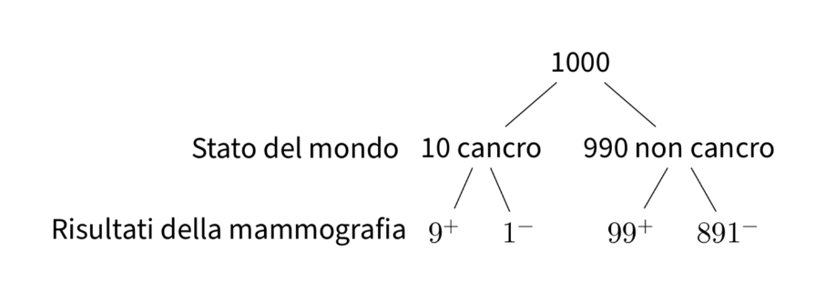

Probabilità condizionata#
In questo capitolo, approfondiremo i seguenti concetti chiave della teoria delle probabilità:
Probabilità Congiunta: Si tratta della probabilità che due eventi si verifichino simultaneamente, anche se in momenti differenti. Ad esempio, potremmo voler conoscere la probabilità congiunta di estrarre una pallina rossa e una pallina verde da un’urna.
Probabilità Marginale: Questa rappresenta la probabilità di un singolo evento, considerato indipendentemente da ogni altro evento. Per esempio, potremmo essere interessati a calcolare la probabilità marginale di estrarre una pallina verde da un’urna.
Probabilità Condizionata: Questa è la probabilità che un evento si verifichi, dato il verificarsi di un altro evento correlato. Ad esempio, se abbiamo già estratto una pallina verde da un’urna, potremmo voler sapere qual è la probabilità di estrarre una seconda pallina verde dalla stessa urna.
In aggiunta, analizzeremo i principali teoremi legati alla probabilità condizionata. Inizieremo questa esplorazione introducendo un noto problema della teoria delle probabilità: il paradosso di Monty Hall.
Il paradosso di Monty Hall#
Il paradosso di Monty Hall costituisce un esempio intrigante di come l’acquisizione di nuove informazioni possa condizionare l’esito di un problema probabilistico. Questo celebre quesito, radicato nella teoria delle probabilità, trae origine dal noto game show televisivo americano ‘Let’s Make a Deal’ e deve la sua fama al presentatore Monty Hall.

Nel gioco sono presenti tre porte chiuse: dietro una si cela un’automobile, mentre dietro le altre due si trovano delle capre. Il concorrente seleziona inizialmente una delle tre porte senza aprirla. Monty Hall, successivamente, apre una delle due porte rimaste, rivelando una capra. In seguito, Monty offre al concorrente l’opzione di cambiare la sua scelta iniziale, optando per l’altra porta ancora chiusa. Il paradosso emerge dalla constatazione che, cambiando la scelta in questa fase, il concorrente aumenta le sue probabilità di vincere l’automobile, passando da 1/3 a 2/3.
Per corroborare questo risultato inaspettato, è possibile realizzare una simulazione in Python. In questa, si prendono in considerazione due scenari: uno in cui il concorrente persiste nella sua scelta iniziale e un altro in cui cambia la scelta dopo che Monty Hall ha svelato una capra. Ripetendo la simulazione per migliaia di volte, è possibile confrontare i risultati empirici e confermare come il cambio di scelta incrementi effettivamente le probabilità di aggiudicarsi l’automobile.
Di seguito è riportato lo script di una simulazione specificamente progettata per elucidare il paradosso di Monty Hall.
import numpy as np
import pandas as pd
import random
Intel MKL WARNING: Support of Intel(R) Streaming SIMD Extensions 4.2 (Intel(R) SSE4.2) enabled only processors has been deprecated. Intel oneAPI Math Kernel Library 2025.0 will require Intel(R) Advanced Vector Extensions (Intel(R) AVX) instructions.
Intel MKL WARNING: Support of Intel(R) Streaming SIMD Extensions 4.2 (Intel(R) SSE4.2) enabled only processors has been deprecated. Intel oneAPI Math Kernel Library 2025.0 will require Intel(R) Advanced Vector Extensions (Intel(R) AVX) instructions.
porte = [
"capra1",
"capra2",
"macchina",
] # definisco il gioco, scelgo una porta a caso per n volte
counter = 0
contatore_cambio = 0
n = 10000
porta_vincente = "macchina"
for i in range(n):
scelta_casuale = random.choice(porte)
porte_rimaste = [x for x in porte if x != scelta_casuale]
porta_rivelata = random.choice([x for x in porte_rimaste if x != porta_vincente])
porta_alternativa = [
x for x in porte if x != scelta_casuale and x != porta_rivelata
]
if "macchina" in porta_alternativa:
contatore_cambio += 1
if scelta_casuale == "macchina":
counter += 1
print(counter / n) # quante volte vinco non cambiando porta
print(contatore_cambio / n) # quante volte vinco cambiando porta
0.3301
0.6699
Questo script Python è stato creato da un gruppo di studenti di Psicometria. Utilizzando una simulazione possiamo comprendere meglio il ragionamento alla base del paradosso di Monty Hall e apprezzare come nuove informazioni possano influenzare in modo significativo le probabilità degli eventi.
Probabilità condizionata su altri eventi#
La probabilità di un evento è intrinsecamente condizionata dal nostro stato di informazione. In presenza di un determinato insieme di informazioni, attribuiamo a un evento una probabilità specifica di occorrenza. Tuttavia, qualora il nostro stato informativo subisca una modifica, anche la probabilità associata all’evento verrà corrispondentemente aggiornata.
In realtà, tutte le probabilità possono essere intese come probabilità condizionate, anche quando la variabile o l’evento condizionante non è esplicitamente specificato. Ciò implica che le probabilità sono sempre contestualizzate e dipendono dal set informativo disponibile in un dato scenario.
Questo quadro concettuale ci induce a considerare le probabilità come una ‘misura di plausibilità’ che riflette la nostra conoscenza corrente del sistema o del fenomeno sotto indagine. A seguito dell’acquisizione di nuove informazioni o di cambiamenti nel contesto, la nostra misura di plausibilità, e quindi la probabilità attribuita agli eventi, può essere rivista.
Definizione
Siano \(A\) e \(B\) due eventi definiti su uno spazio campionario \(S\). Supponendo che l’evento \(B\) sia verificato, la probabilità condizionata di \(A\) dato \(B\) è data da
dove \(P(A\cap B)\) rappresenta la probabilità congiunta dei due eventi, ovvero la probabilità che entrambi si verifichino.
È importante notare che \(P(A \mid B)\) non è definita se \(P(B) = 0\).
La probabilità condizionata può essere interpretata come una ricalibrazione dello spazio campionario da \(S\) a \(B\). Per spazi campionari discreti, la probabilità condizionata è espressa come
Probabilità condizionata e lancio di due dadi#
Consideriamo un esempio. Lanciamo due dadi equilibrati e vogliamo calcolare la probabilità che la somma dei punteggi ottenuti sia minore di 8.
Inizialmente, quando non abbiamo ulteriori informazioni, possiamo calcolare la probabilità in modo tradizionale. Ci sono 21 risultati possibili con somma minore di 8. Poiché ci sono 36 possibili combinazioni di lancio dei due dadi, la probabilità di ottenere una somma minore di 8 è 21/36, che equivale a circa 0.58.
Supponiamo ora di sapere che la somma del lancio di due dadi ha prodotto un risultato dispari. In questo caso, ci sono solo 18 possibili combinazioni di lancio dei due dadi (dato che abbiamo escluso i risultati pari). Tra essi, vi sono 12 risultati che soddisfano la condizione per cui la somma è minore di 8. Quindi, la probabilità di ottenere una somma minore di 8 cambia da circa 0.58 a 12/18, ovvero 0.67 quando consideriamo l’informazione aggiuntiva del risultato dispari.
Svolgiamo il problema in Python.
r = range(1, 7)
sample = [(i, j) for i in r for j in r]
sample
[(1, 1),
(1, 2),
(1, 3),
(1, 4),
(1, 5),
(1, 6),
(2, 1),
(2, 2),
(2, 3),
(2, 4),
(2, 5),
(2, 6),
(3, 1),
(3, 2),
(3, 3),
(3, 4),
(3, 5),
(3, 6),
(4, 1),
(4, 2),
(4, 3),
(4, 4),
(4, 5),
(4, 6),
(5, 1),
(5, 2),
(5, 3),
(5, 4),
(5, 5),
(5, 6),
(6, 1),
(6, 2),
(6, 3),
(6, 4),
(6, 5),
(6, 6)]
event = [roll for roll in sample if sum(roll) < 8]
print(f"{len(event)} / {len(sample)}")
21 / 36
sample_odd = [roll for roll in sample if (sum(roll) % 2) != 0]
sample_odd
[(1, 2),
(1, 4),
(1, 6),
(2, 1),
(2, 3),
(2, 5),
(3, 2),
(3, 4),
(3, 6),
(4, 1),
(4, 3),
(4, 5),
(5, 2),
(5, 4),
(5, 6),
(6, 1),
(6, 3),
(6, 5)]
event = [roll for roll in sample_odd if sum(roll) < 8]
print(f"{len(event)} / {len(sample_odd)}")
12 / 18
Se applichiamo l’eq. (10), abbiamo: \(P(A \cap B)\) = 12/36, \(P(B)\) = 18/36 e
Questo esempio illustra come la probabilità di un evento possa variare in base alle informazioni aggiuntive di cui disponiamo. Nel secondo caso, avendo l’informazione che la somma è dispari, la probabilità di ottenere una somma minore di 8 aumenta notevolmente rispetto al caso iniziale in cui non avevamo questa informazione.
Mammografia e cancro al seno#
In questo esempio, consideriamo uno screening per la diagnosi precoce del tumore mammario utilizzando un test con determinate caratteristiche:
Sensibilità del test: 90%. Questo significa che il test classifica correttamente come positivo il 90% delle donne colpite dal cancro al seno.
Specificità del test: 90%. Ciò indica che il test classifica correttamente come negativo il 90% delle donne che non hanno il cancro al seno.
Prevalenza del cancro al seno nella popolazione sottoposta allo screening: 1% (0.01). Questo è il 1% delle donne che ha effettivamente il cancro al seno, mentre il restante 99% (0.99) non ne è affetto.
Ora cerchiamo di rispondere alle seguenti domande:
Qual è la probabilità che una donna scelta a caso ottenga una mammografia positiva? Poiché il 1% delle donne ha il cancro al seno, la probabilità di ottenere una mammografia positiva (test positivo) è pari alla sensibilità del test, ovvero 0.90 (cioè 90%).
Se la mammografia è positiva, qual è la probabilità che vi sia effettivamente un tumore al seno?
Per risolvere questo problema, consideriamo un campione di 1000 donne sottoposte al test di screening per il tumore al seno. Di queste 1000 donne:
10 donne (1% del campione) hanno effettivamente il cancro al seno. Per queste 10 donne con il cancro, il test darà un risultato positivo (vera positività) in 9 casi (90%).
Per le restanti 990 donne (99% del campione) che non hanno il cancro al seno, il test darà un risultato positivo (falsa positività) in 99 casi (10%).
Questa situazione può essere rappresentata graficamente nel seguente modo:
{kind=link}
Combinando i due risultati precedenti, vediamo che il test dà un risultato positivo per 9 donne che hanno effettivamente il cancro al seno e per 99 donne che non lo hanno, per un totale di 108 risultati positivi su 1000. Pertanto, la probabilità di ottenere un risultato positivo al test è \(\frac{108}{1000}\) = 0.108.
Tuttavia, tra le 108 donne che hanno ottenuto un risultato positivo al test, solo 9 hanno effettivamente il cancro al seno. Quindi, la probabilità di avere il cancro al seno, dato un risultato positivo al test, è pari a \(\frac{9}{108}\) = 0.083, corrispondente all’8.3%.
In questo esempio, la probabilità dell’evento “ottenere un risultato positivo al test” è una probabilità non condizionata, poiché calcoliamo semplicemente la proporzione di risultati positivi nel campione totale. D’altra parte, la probabilità dell’evento “avere il cancro al seno, dato che il test ha prodotto un risultato positivo” è una probabilità condizionata, poiché calcoliamo la proporzione delle donne con il cancro al seno tra quelle che hanno ottenuto un risultato positivo al test.
Questo esempio illustra come la conoscenza di ulteriori informazioni (il risultato positivo al test) può influenzare la probabilità di un evento (avere il cancro al seno), mostrando chiaramente la differenza tra probabilità condizionate e non condizionate.
Il paradosso di Simpson#
Nel campo della probabilità condizionata, uno dei fenomeni più interessanti e, nel contempo, più controintuitivi, è rappresentato dal paradosso di Simpson. Quando applicato al mondo della psicologia, il fenomeno può essere descritto come segue.
Due psicoterapeuti, Rossi e Bianchi, praticano due tipi di terapie: terapia per disturbi d’ansia e coaching per migliorare le prestazioni lavorative. Ogni terapia può avere un esito positivo o negativo. I rispettivi bilanci dei due terapeuti sono riportati nelle seguenti tabelle.
Rossi#
Tipo di terapia |
Successo |
Fallimento |
|---|---|---|
Disturbi d’ansia |
70 |
20 |
Coaching lavorativo |
10 |
0 |
Totale |
80 |
20 |
Bianchi#
Tipo di terapia |
Successo |
Fallimento |
|---|---|---|
Disturbi d’ansia |
2 |
8 |
Coaching lavorativo |
81 |
9 |
Totale |
83 |
17 |
Rossi ha un tasso di successo superiore a Bianchi nella terapia per i disturbi d’ansia: 70 su 90 rispetto a 2 su 10. Anche nel coaching lavorativo, Rossi ha un tasso di successo superiore: 10 su 10 rispetto a 81 su 90. Tuttavia, se aggregiamo i dati dei due tipi di terapia per confrontare i tassi di successo globali, Rossi è efficace in 80 su 100 terapie, mentre Bianchi in 83 su 100: il tasso di successo globale di Bianchi risulta superiore!
Questo fenomeno è un esempio del paradosso di Simpson, dove una tendenza osservata in diversi gruppi si inverte quando i gruppi sono combinati.
Per essere più precisi, possiamo calcolare i tassi di successo per ciascun terapeuta e per ciascun tipo di terapia, oltre al tasso di successo globale.
Rossi
Tasso di successo in terapia per disturbi d’ansia: \(\frac{70}{70+20} = \frac{70}{90} \approx 0.778\)
Tasso di successo in coaching lavorativo: \(\frac{10}{10+0} = \frac{10}{10} = 1\)
Tasso di successo globale: \(\frac{70+10}{70+20+10+0} = \frac{80}{100} = 0.8\)
Bianchi
Tasso di successo in terapia per disturbi d’ansia: \(\frac{2}{2+8} = \frac{2}{10} = 0.2\)
Tasso di successo in coaching lavorativo: \(\frac{81}{81+9} = \frac{81}{90} \approx 0.9\)
Tasso di successo globale: \(\frac{2+81}{2+8+81+9} = \frac{83}{100} = 0.83\)
Quello che sta succedendo è che Rossi, presumibilmente a causa della sua reputazione come terapeuta più esperto, sta effettuando un numero maggiore di terapie per disturbi d’ansia, che sono intrinsecamente più complesse e con una probabilità di successo variabile rispetto al coaching lavorativo. Il suo tasso di successo globale è inferiore non a causa di una minore abilità in un particolare tipo di terapia, ma perché una frazione maggiore delle sue terapie riguarda casi più complessi.
L’aggregazione dei dati tra diversi tipi di terapia presenta un quadro fuorviante delle abilità dei terapeuti perché perdiamo l’informazione su quale terapeuta tende a effettuare quale tipo di terapia. Quando sospettiamo la presenza di variabili di confondimento, come ad esempio il tipo di terapia in questo contesto, è fondamentale analizzare i dati in modo disaggregato per comprendere con precisione la dinamica in atto.
Teorema della probabilità composta#
È possibile scrivere l’eq. (10) nella forma:
Questo secondo modo di scrivere l’equazione (10) è chiamato teorema della probabilità composta (o regola moltiplicativa, o regola della catena). La legge della probabilità composta ci dice che la probabilità che si verifichino contemporaneamente due eventi \(A\) e \(B\) è pari alla probabilità di uno dei due eventi moltiplicata per la probabilità dell’altro evento condizionata al verificarsi del primo.
L’eq. (11) si estende al caso di \(n\) eventi \(A_1, \dots, A_n\) nella forma seguente:
Per esempio, nel caso di quattro eventi abbiamo
Per fare un esempio, consideriamo il problema seguente. Da un’urna contenente 6 palline bianche e 4 nere si estrae una pallina per volta, senza reintrodurla nell’urna. Indichiamo con \(B_i\) l’evento: “esce una pallina bianca alla \(i\)-esima estrazione” e con \(N_i\) l’estrazione di una pallina nera. L’evento: “escono due palline bianche nelle prime due estrazioni” è rappresentato dalla intersezione \(\{B_1 \cap B_2\}\) e, per l’eq. (11), la sua probabilità vale
\(P(B_1)\) vale 6/10, perché nella prima estrazione \(\Omega\) è costituito da 10 elementi: 6 palline bianche e 4 nere. La probabilità condizionata \(P(B_2 \mid B_1)\) vale 5/9, perché nella seconda estrazione, se è verificato l’evento \(B_1\), lo spazio campionario consiste di 5 palline bianche e 4 nere. Si ricava pertanto:
In modo analogo si ha che
Se l’esperimento consiste nell’estrazione successiva di 3 palline, la probabilità che queste siano tutte bianche, per l’eq. (12), vale
La probabilità dell’estrazione di tre palline nere è invece:
Il teorema della probabilità totale#
Il teorema della probabilità totale (detto anche teorema delle partizioni) afferma che se abbiamo una partizione di uno spazio campionario \(\Omega\) in \(n\) eventi mutualmente esclusivi e tali che la loro unione formi \(\Omega\), allora la probabilità di un qualsiasi evento in \(\Omega\) può essere calcolata sommando la probabilità dell’evento su ciascun sottoinsieme della partizione, pesata in base alla probabilità del sottoinsieme.
In altre parole, se \(H_1, H_2, \dots, H_n\) sono eventi mutualmente esclusivi e tali che \(\bigcup_{i=1}^n H_i = \Omega\), allora per ogni evento \(E \subseteq \Omega\), la probabilità di \(E\) è data dalla formula:
dove \(P(E \mid H_i)\) rappresenta la probabilità condizionata di \(E\) dato che si è verificato l’evento \(H_i\), e \(P(H_i)\) è la probabilità dell’evento \(H_i\).
Questo teorema è molto utile quando abbiamo una partizione dello spazio campionario e vogliamo calcolare la probabilità di un evento, sfruttando le probabilità dei singoli eventi della partizione. Il caso più semplice è quello di una partizione dello spazio campione in due sottoinsiemi: \(P(E) = P(E \cap H_1) + P(E \cap H_2)\).

In tali circostanza abbiamo che
L’eq. (13) è utile per calcolare \(P(E)\), se \(P(E \mid H_i)\) e \(P(H_i)\) sono facili da trovare. Quale esempio, consideriamo il seguente problema. Abbiamo tre urne, ciascuna delle quali contiene 100 palline:
Urna 1: 75 palline rosse e 25 palline blu,
Urna 2: 60 palline rosse e 40 palline blu,
Urna 3: 45 palline rosse e 55 palline blu.
Una pallina viene estratta a caso da un’urna anch’essa scelta a caso. Qual è la probabilità che la pallina estratta sia di colore rosso?
Sia \(R\) l’evento “la pallina estratta è rossa” e sia \(U_i\) l’evento che corrisponde alla scelta dell’\(i\)-esima urna. Sappiamo che
Gli eventi \(U_1\), \(U_2\) e \(U_3\) costituiscono una partizione dello spazio campione in quanto \(U_1\), \(U_2\) e \(U_3\) sono eventi mutualmente esclusivi ed esaustivi, ovvero \(P(U_1 \cup U_2 \cup U_3) = 1.0\). In base al teorema della probabilità totale, la probabilità di estrarre una pallina rossa è dunque
Facciamo un altro esempio. Usiamo ora il teorema della probabilità totale per risolvere il paradosso di Monty Hall. Immaginiamo tre scenari, rappresentati dai tre eventi \( C_1 \), \( C_2 \), e \( C_3 \), che indicano rispettivamente che l’auto si trovi dietro la porta 1, 2 o 3.
Se l’auto è dietro la porta 1 e decidiamo di cambiare la nostra scelta, perderemo. In questo caso, la probabilità di vincere l’auto, data la nostra scelta iniziale di porta 1, è \( P(\text{vincere l'auto} \mid C_1) = 0 \).
Se, invece, l’auto è dietro la porta 2 o 3, Monty aprirà l’altra porta che nasconde una capra. Se decidiamo di cambiare la nostra scelta, vinceremo. Quindi, in questi casi, la probabilità di vincere è \( P(\text{vincere l'auto} \mid C_2) = 1 \) e \( P(\text{vincere l'auto} \mid C_3) = 1 \).
Ora, applicando il teorema della probabilità totale, la probabilità complessiva di vincere l’auto se cambiamo la porta è:
In pratica, cambiare la porta ci dà una probabilità del \( \frac{2}{3} \) di vincere l’auto, mentre mantenerla ci darebbe solo \( \frac{1}{3} \). Quindi, è statisticamente più vantaggioso cambiare la porta.
L’indipendendenza stocastica#
L’indipendenza stocastica è un concetto fondamentale nell’applicazione della probabilità in campo statistico. Possiamo esprimere in modo intuitivo l’indipendenza tra due eventi \(A\) e \(B\) utilizzando l’equazione (10). Se \(A\) e \(B\) sono indipendenti, ciò significa che il verificarsi di uno degli eventi non influisce sulla probabilità del verificarsi dell’altro, e viceversa. In altre parole, il verificarsi di uno dei due eventi non condiziona la probabilità dell’altro evento.
Per esprimere l’indipendenza con l’equazione (10), consideriamo \(A\) e \(B\) come eventi indipendenti. Allora, abbiamo:
Possiamo quindi affermare che due eventi \(A\) e \(B\) sono indipendenti se soddisfano le seguenti condizioni:
Questo implica che la probabilità dell’evento \(A\) rimane invariata, indipendentemente dal verificarsi dell’evento \(B\), e viceversa.
Tre eventi \(A\), \(B\) e \(C\) sono indipendenti se soddisfano le seguenti condizioni:
In altre parole, l’intersezione di ciascuna coppia di eventi deve avere una probabilità uguale al prodotto delle probabilità dei singoli eventi. Se queste prime tre condizioni sono soddisfatte, allora gli eventi si dicono “indipendenti a due a due”. Tuttavia, per essere completamente indipendenti, è necessario che anche l’intersezione di tutti e tre gli eventi abbia una probabilità uguale al prodotto delle probabilità dei singoli eventi. Solo in questo caso possiamo dire che gli eventi sono completamente indipendenti.
Consideriamo il seguente problema. Nel lancio di due dadi non truccati, si considerino gli eventi: \(A\) = “esce un 1 o un 2 nel primo lancio” e \(B\) = “il punteggio totale è 8”. Gli eventi \(A\) e \(B\) sono indipendenti?
Calcoliamo \(P(A)\):
r = range(1, 7)
sample = [(i, j) for i in r for j in r]
A = [roll for roll in sample if roll[0] == 1 or roll[0] == 2]
print(A)
print(f"{len(A)} / {len(sample)}")
[(1, 1), (1, 2), (1, 3), (1, 4), (1, 5), (1, 6), (2, 1), (2, 2), (2, 3), (2, 4), (2, 5), (2, 6)]
12 / 36
Calcoliamo \(P(B)\):
B = [roll for roll in sample if roll[0] + roll[1] == 8]
print(B)
print(f"{len(B)} / {len(sample)}")
[(2, 6), (3, 5), (4, 4), (5, 3), (6, 2)]
5 / 36
Calcoliamo \(P(A \cap B)\):
I = [
roll
for roll in sample
if (roll[0] == 1 or roll[0] == 2) and (roll[0] + roll[1] == 8)
]
print(I)
print(f"{len(I)} / {len(sample)}")
[(2, 6)]
1 / 36
Gli eventi \(A\) e \(B\) non sono statisticamente indipendenti dato che \(P(A \cap B) \neq P(A)P(B)\):
12/36 * 5/36 == 1/36
False
Commenti e considerazioni finali#
La probabilità condizionata riveste un ruolo fondamentale poiché ci permette di definire in modo preciso il concetto di indipendenza statistica. Uno degli aspetti cruciali dell’analisi statistica riguarda la valutazione dell’associazione tra due variabili. Nel capitolo attuale, ci siamo concentrati sul concetto di indipendenza, che indica l’assenza di relazione tra le variabili. Tuttavia, in futuro, esploreremo come fare inferenze sulla correlazione tra variabili, ovvero come determinare se le variabili sono associate tra loro o se esiste una relazione statistica credibile tra di esse. Questo approfondimento ci permetterà di studiare le connessioni tra variabili e comprendere meglio i fenomeni osservati nei dati.